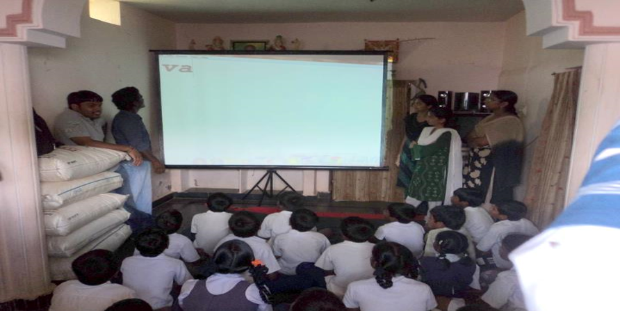
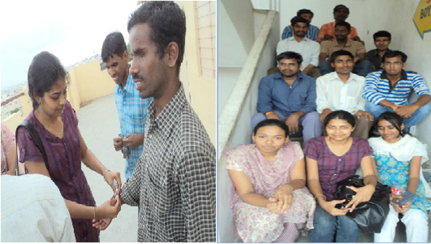
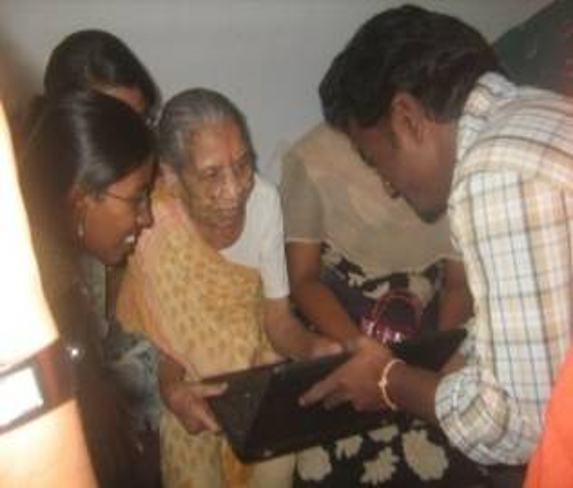
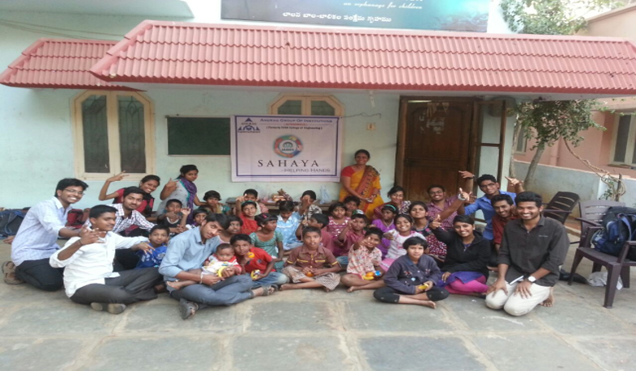
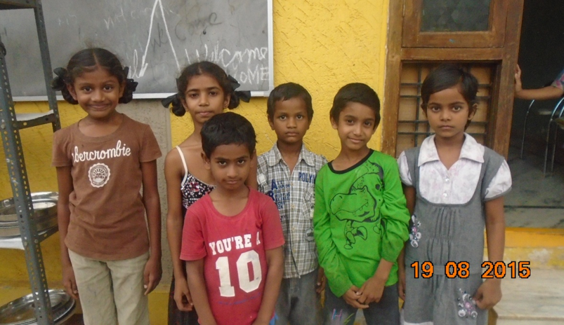
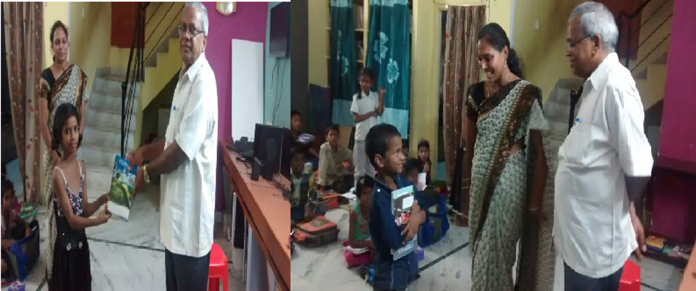
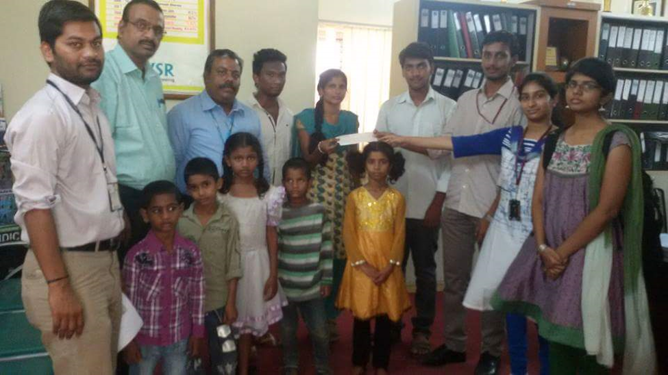

ABOUT US
CVSR Sahaya was started in the year 2009 by the students of CSE , under the guidance of Dr. G. Vishnu Murthy, HOD of CSE.
It started with an aim to provide support to the under privileged and needy of the society as a whole and with a more concentration on
such people in the surroundings of the college campus.
Though it started as an initiative by the students of CSE, it gradually spread throughout the college with its open ideology and
clear vision and became an amalgamation of the student community from all departments and all years making itself an institutional
organization than a departmental work.
In the course of its progress even Faculty from various departments became the members of Sahaya and took active part in their roles
towards helping the society within their reach.
Transparency and clarity of vision and mission of the organization are the assets that made Sahaya a very successful student
organization. The continuous dynamic leadership of various students over the years expanded the works of Sahaya from simple monetary
help to a few people to the level of a monthly support to orphanages and under privileged and also to adopting uncared kids.
A detailed list of each work done by Sahaya is given below and Sahaya wishes to grow its reach and capabilities as high as
possible and be able to help as many as possible.
AIMS AND OBJECTIVES
- 1.To make sure that the citizens of the country have the access to enjoy the fundamental rights.
- 2.To bring socio-economic change in India.
- 3.We must bring the change that we seek to bring out.
- 4.Our services mainly focus on imparting few basic needs for people like blind, orphans etc so that they become self sufficient in future.
- 5.To help the underprivileged and to better their lives in any way possible.
- 6.We aim at educating and empowering the youth into taking proper and timely action, so as to encompass a brighter tomorrow.
ACTIVITIES
- 1.Visiting Old age Home.
- 2.Visit to Orphanages.
- 3.Visiting Government Schools.
- 4.Collecting Blood Group Database.
- 5.Visit To Blind Hostel.
- 6.Eye Donation Camp.
- 7.Conducted A Rally On Anti-Ragging Go Green Ganesh And Anti Drug Addiction.
- 8.Conducting Blood Donation Camps.
- 9.Distribution Text Books to Govt School Students.
- 10.Donating Rice to Orphanage.
GENERAL VISIT
EDUCATING CHILDREN
CVSR Sahaya Members frequently visit Govt. Schools and educate them in computer education.
- With the motive to educate government high school students with basics of computer which may help them in the immediate future,
the committee students taught them few concepts (basics) like MS-WORD, PAINT etc in which the students were enthusiastic to learn them.
- Our committee students also inspired them by showing great leader’s pictures and their autobiographies (in brief)
so as to make them to dedicate something to our nation.

VISIT TO GOVT HOME FOR THE BLIND
The CVSR Sahaya Members Visited govt home for the blind at Dilshuknagar and celebrated Rakhi
festival with differently abled people.
- The precious gift that is given by god to us is VISION to enjoy the beauty of nature that he created, but still few people in
this world are lagging it.
- These blind people still are taken care by few government organizations. SAHAYA students visited one of them.
They visited blind school on friendship day so as to create a friendly relationship with them in order to help them .
- During interaction people reacted so well expressing their feelings, requirements etc with the committee students.
CVSR -SAHAYA students were able to provide some necessary things to them by raising funds from the students in the CVSR campus.

VISIT TO THE OLDAGE HOME
- The very first event of CVSR-SAHAYA committee was a visit to old age home at Dilsukh nagar.
- There they found many old people staying alone from their children due to many reasons.
- Many of them told that their children were not taking care of them. The students shared a view that those old
people are missing their children so much and are expecting love from others atleast.
- Students found few facilities that were not available there. CVSR-SAHAYA students collected contributions and
donated to the old age home for improving the facilities.

AWARENESS PROGRAMME ON EYE DONATION
- This was a very big event planned by CVSR-SAHAYA students in order to gather all the students from different branches so as to
donate our eyes after we pass away to the blind.
- The program was held by Mr. T. Kishan Reddy, counseling coordinator, L. V. Prasad institute who came all the long way to CVSR campus.
- He created awareness among the students as well as faculty and management and explained the importance of donating eyes,
and various causes of blindness etc.
BLOOD DONATION CAMP
- CVSR-SAHAYA has conducted a blood donation camp in the college premises ,which had a good response from the students .
- All students had actively participated in it and made this a very good success.
- The blood donation camp was conducted with an intention to provide help to the people in need of blood.
LALANA ORPHANAGE
CVSR Sahaya student members visited lalana orphanage to offer money in the form cheque for
paying school fees of children residing in orphanage home. Lalana Orphanage has children of all ages who are in need of love and
care along with financial help.

CVSR Sahaya extended its activities by adopting children’s
2k14 Academic CSE students Adopted 4 children’s and have faculty side 2members adopting six
school children studying below III Standard by providing all basic facilities like paying school fee, issuing of required text books
and notebooks, providing clothes etc.

Prof. Mutha Reddy Principal and Mrs. Vishnu Vandana HR of AGI visited Friends
Foundation adopted 6- kids and distributed books among the children

Dr.K.S. Rao, Director and Dr.G.Vishnu Murthy HOD, CSE Dept. donating cheque to the adopted children
under CVSR Sahaya

Birth day celebration of adopted kids baby swapna and ambika by CVSR Sahaya at friends foundation.